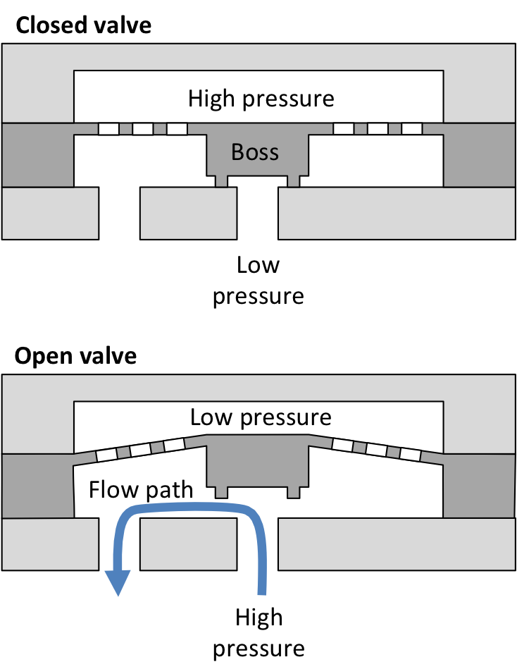
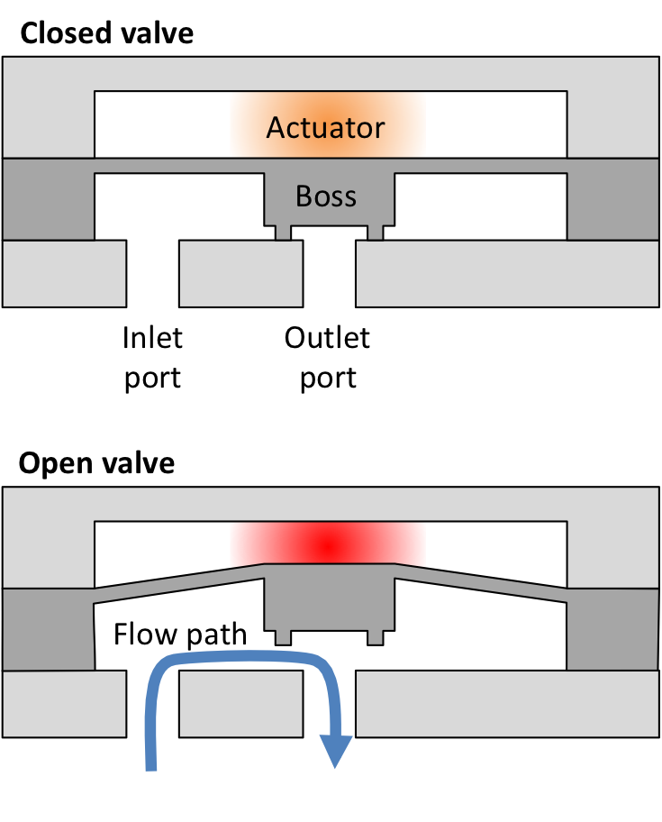

# Mikrozawory MEMS
### Jacek Dobrowolski
J.Dobrowolski@stud.elka.pw.edu.pl
prezentacja dostępna na: [jacekdobrowolski.github.io/sdi](https://jacekdobrowolski.github.io/sdi)
Note:
Dzień dobry
Nazywam się Jacek Dobrowolski
chciałbym dzisiaj przybliżyć temat mikrozaworów MEMS
prezentacja jest dostępna pod wskazanym adresem
Precyzyjne systemy dozowania leków
Elektrohydrauliczne systemy hamulcowe
W celach laboratoryjnych lab-on-chip (LOC)
Systemy Micro Total Analisis (µTAS)
Chłodnictwo w celu oszczędzania energii
Płyty kuchenne gazowe
Mikrozawory
Pasywne
Aktywne
Pasywne

Pasywne
Mechaniczne
Nie mechaniczne
Pasywne
Mechaniczne
Zawory zwrotne
Membranowe
Kulkowe
Klapowe
Nie mechaniczne
Kapilarne
Dyfuzorowe
Aktywne
Aktywne

Aktywne
Mechaniczne
Nie Mechaniczne
Zewnętrzne
Aktywne
Mechaniczne
Termiczne
Elektromagnetyczne
Piezoelektryczne
Elektrostatyczne
Nie Mechaniczne
Elektrochemiczne
Przemiana fazowa
Reologiczne (deformacje plastyczne)
Zewnętrzne
Modularne
Pneumatyczne
**Termiczne**
Note:
Pierwszy dział metod aktywacji o których che powiedzieć to aktywacje termiczne.
**Termopneumatyczne**
Note:
Pierwsza aktywacja termiczna o jakiej chce powiedzieć to aktywacja Termopneumatyczna.
Mechanizmem poruszającym elementem przysłaniającym jest zmiana ciśnienia,
spowodowana zmianą temperatury w szczelnej wnęce.
Tak jak widzieliśmy na wcześniejszej ilustracji.
**Termopneumatyczne**
| Wady | Zalety |
|----------------------|----------|
| Duże zużycie energii | Prostota |
| Powolne działanie | |
Note:
//TODO
Do wad takiego rozwiązania należą stosunkowo duże zużycie energii oraz bardzo powolne działanie.
Są jednak dość proste do wykonania.
**Bimetalowe**
Note:
**Stopy z pamięcią kształtu (TSMA)**
Note:
Stopy z termiczną pamięcią kształtu Shape memory alloy.
Takie jak Nitinol czyli stop niklu z tytanem.
To materiały które po zdeformowaniu w niskiej temperaturze,
na skutek przemiany mertenzytycznej przy pewnej wyższej temperaturze,
powracają do oryginalnej formy.
Pozwala to na przykład na stworzenie sprężyny która rozprostowuję się przy pewnej temperaturze.
Jest to jedna z ciekawszych technologii.
**Elektromagnetyczne**
Note:
Mikrozawory elektromagnetyczne wykorzystują siłę magnetyczną
do poruszania elementu mechanicznego otwierającego zawór.
Przykładowa konstrukcja zawiera cewkę w formie spirali nawiniętej na powierzchni membrany.
W podłożu znajduje się natomiast magnes permanentny.
Poprzez przepływ prądu w cewce można regulować uchylenie membrany.
**Elektromagnetyczne**
| Wady | Zalety |
|----------------------|---------------------|
| Duże zużycie energii | Precyzyjna kontrola |
| | Szybkie działanie |
Note:
Do zalet należy precyzyjna kontrola i szybkie działanie.
//TODO
**Piezoelektryczne**
Note:
Mikrozawory wykorzystują odwrotny efekt piezoelektryczny.
Jest to zjawisko w którym niektóre kryształy (np. kwarcu)
pod wpływem przyłożonego napięcia nieznacznie zmieniają
odległość między jonami w swojej sieci krystalicznej zmieniając swoje wymiary.
**Piezoelektryczne**
| Wady | Zalety |
|----------------------|---------------------|
| Mały przepływ | Duża siła |
| | Szybkie działanie |
Note:
//TODO
Natura zjawiska powoduje że zmiana geometrii jest niewielka,
jednak jest szybka i pozwala na utrzymanie wysokich ciśnień.
**Elektrostatyczne**
Note:
Do zmiany stanu zaworu moża również wykorzystać siłę elektrostatyczną.
Przykładowa konstrukcja może składać się z filmu w kształcie litery-S
przewodzącego umieszczonego między elektrodami.
Przyłożenie do nich napięcia powoduje zmianę położenia filmu.
Elektrody można łatwo podzielić na kilka części co daje większe możliwości sterowania położeniem filmu.
**Elektrostatyczne**
| Wady | Zalety |
|----------------------|------------------------|
| | Precyzyjna kontrola |
| | Szybkie działanie |
| | Niskie zużycie energii |
Note:
//TODO
### Bibliografia
- Qian, J.-Y., Hou, C.-W., Li, X.-J., and Jin, Z.-J. (2020).
*Actuation mechanism of microvalves: A review. Micromachines*, 11(2):172
- h, K. W. and Ahn, C. H. (2006).
*A review of microvalves. Journal of Micromechanics and Microengineering*, 16(5):R13–R39
Note:
Dla osób zainteresowanych tematem mogę polecić pozycje na których oparłem tę prezentacje.
### Źródła ilustracji
[*Przekrój pasywnego mikro zawóru*](https://commons.wikimedia.org/wiki/File:Passive_microvalve.png)
Autor: Wouter at KTH
Licencja: [CC BY-SA 4.0](https://creativecommons.org/licenses/by-sa/4.0/)
[*Przekrój aktywnego mikro zawóru*](https://commons.wikimedia.org/wiki/File:Microvalve.png)
Autor: Wouter at KTH
Licencja: [CC0](https://creativecommons.org/publicdomain/zero/1.0/deed.en)
Note:
Ilustracje pochodzą z wikimedia i nie zostały zmodyfikowane.
**Jacek Dobrowolski**
*dziękuje za uwagę*
Notes:
Ukłon